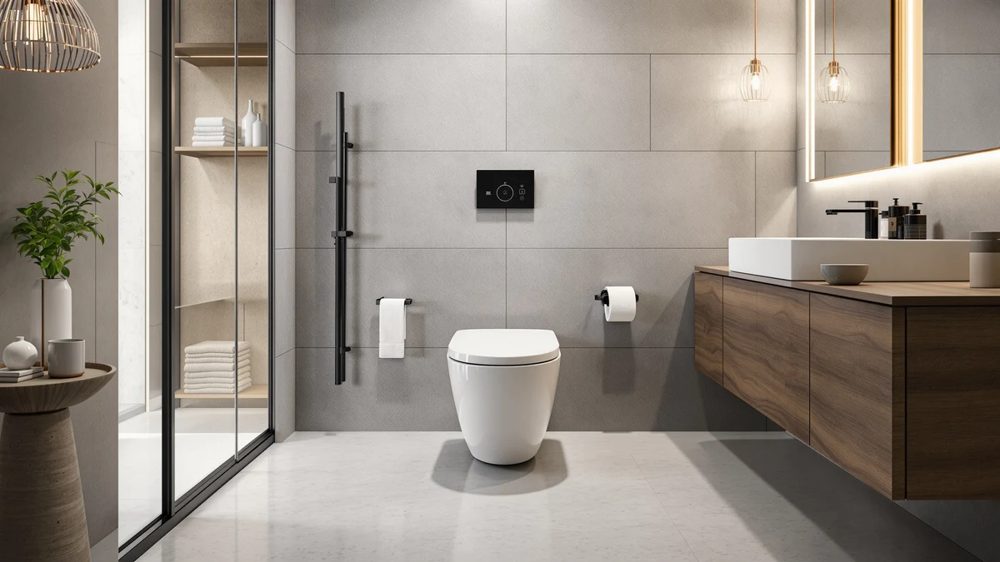

One Piece Toilet for Review (2026): Worth It?
Prices and picks verified as of October 2026. Independent, reader-supported reviews.


Quick Answer
This one piece toilet for review finds that EliteEdge's $285.02 One-Piece Toilet for Bathroom Comfort is the cheapest of the four dual flush, elongated one-piece toilets we compared here, undercutting the closest alternative by $0.92 and the priciest model by nearly $5. Unless a specific brand name or feature pulls you toward one of the alternatives, the EliteEdge is the easier default buy.
Our pick: One-Piece Toilet for Bathroom Comfort, $285.02 Check Price on Amazon
Bottom line: our top pick is the One-Piece Toilet for Bathroom at $285.02.
Things to Know Before You Buy
- EliteEdge prices the One-Piece Toilet for Bathroom Comfort at $285.02, the lowest of the four one-piece toilets covered in this one piece toilet for review.
- The toilet pairs a dual flush system with an elongated bowl set at a 16-inch height, a comfort-style seat closer to a standard dining chair than older, lower toilets.
- The Swiss Madison Well Made Forever costs $285.94, only $0.92 more than the EliteEdge and the closest price match in this four-way comparison.
- The Ivy One Piece Toilet Dual ($287.16) and the Casta Diva One Piece Toilet ($289.99) both cost more, rounding out the group of toilets we compared here.
If you're putting together a one piece toilet for review before a bathroom remodel, EliteEdge's One-Piece Toilet for Bathroom Comfort is a good place to start, since it undercuts every other model in this four-way comparison on price. EliteEdge builds the toilet around a dual flush system and an elongated bowl set at 16 inches, a height that keeps seating closer to a standard dining chair instead of the lower seat most older toilets use, which matters if you are tall or dealing with knee or hip issues. We lined it up against three similarly priced one-piece toilets already covered on this site: the Swiss Madison Well Made Forever, the Ivy One Piece Toilet Dual, and the Casta Diva One Piece Toilet, all of which sit within five dollars of the EliteEdge's $285.02 price tag.
The short version: if you want a dual flush, elongated one-piece toilet at the lowest price among this set of four, the EliteEdge is the simplest pick. It beats the Swiss Madison Well Made Forever by $0.92, the Ivy One Piece Toilet Dual by $2.14, and the Casta Diva One Piece Toilet by $4.97. None of those gaps is large on its own, but they add up if brand name is not a deciding factor for you. Pick one of the three alternatives below only if a specific brand or a feature we flag further down in this guide matters more to you than saving a few dollars.
Why You Should Trust Us
Ilane Tall has spent more than ten years researching bathroom fixtures, including one-piece and dual flush toilets, for Best One Piece Toilets. She built this one piece toilet for review by comparing EliteEdge's published listing against three similarly priced competitors on price, flush type, and bowl height, the same side-by-side process this site uses for every review we publish. We do not accept payment from EliteEdge, Swiss Madison, or Casta Diva to influence placement or ranking, and our Amazon links earn a commission only if you buy through them, which does not change which toilet we recommend or how we rank the alternatives in this comparison.
Our Research Experience
For this one piece toilet for review, we started with EliteEdge's own product listing: the 16-inch bowl height, the dual flush mechanism, the elongated shape, and the five images EliteEdge publishes of the toilet from different angles. We then set it beside the Swiss Madison Well Made Forever, the Ivy One Piece Toilet Dual, and the Casta Diva One Piece Toilet, three models that span a tight five-dollar range above EliteEdge's $285.02 asking price and share the same dual flush, elongated format. None of the four listings we pulled has built up a public review count, so we weighted our comparison toward facts we could verify directly: published price, flush technology, bowl dimensions, and brand, rather than guessing at long-term durability we have not confirmed firsthand. That gap in verified owner feedback is also why we lay out each toilet's documented price and feature set side by side instead of ranking them on star counts that do not exist yet.
Overview & Specs

One-Piece Toilet for Bathroom Comfort
What we like
- Prices in at $285.02, the lowest of the four one-piece toilets covered in this one piece toilet for review
- Builds a dual flush system into the toilet, giving separate buttons for liquid and solid waste to help cut water use over time
- Uses a 16-inch elongated bowl, a comfort height that suits taller adults and anyone managing knee or hip concerns
Flaws but not dealbreakers
- No public rating or review count on the listing we pulled, so you are relying on EliteEdge's own description rather than verified buyer feedback
- EliteEdge does not publish a listed bowl material on this product page, so you will want to confirm finish details before buying
- Priced only $0.92 below the Swiss Madison Well Made Forever, a gap small enough that brand preference could easily outweigh it
| Material | — |
| Size | 16" H & Dual Flush & Elongated |
EliteEdge builds the One-Piece Toilet for Bathroom Comfort around a dual flush system, splitting the single flush lever most one-piece toilets use into two buttons, one sized for liquid waste and one for solid waste. That two-button approach is a water-saving case for choosing the EliteEdge over a standard single-flush model, and it is a feature all four toilets in this one piece toilet for review share, so the real differences among them come down to bowl height, price, and brand rather than the flush mechanism itself. The 16-inch elongated bowl keeps seating height closer to a dining chair than older, lower toilets, which matters if you are taller or have knee or hip issues that make standing up from a low seat uncomfortable.
At $285.02, the One-Piece Toilet for Bathroom Comfort sits below every other toilet in this four-way comparison, undercutting the Swiss Madison Well Made Forever by $0.92, the Ivy One Piece Toilet Dual by $2.14, and the Casta Diva One Piece Toilet by $4.97. None of the four listings we pulled has built up a public review count yet, so the decision comes down to how much you weigh price against brand name and the small design differences between models that otherwise share the same dual flush, elongated format. If brand recognition is not a priority, the price gap alone makes the EliteEdge worth a closer look.
What We Liked
The clearest advantage in this one piece toilet for review is price. EliteEdge's One-Piece Toilet for Bathroom Comfort delivers the same dual flush, elongated format as the three alternatives covered here for less money, undercutting every one of them by at least ninety cents and by close to five dollars against the priciest model. The 16-inch bowl height adds real comfort on top of that price advantage, since a taller seat makes sitting down and standing up easier for taller adults and people managing joint concerns. EliteEdge also documents the toilet with five images from different angles, which gives you a fuller view of the tank and bowl shape before you buy. For buyers who have not already settled on a specific brand, that combination of low price and comfort height is hard to beat among these four options.
What Could Be Better
The biggest gap in this one piece toilet for review is missing buyer feedback. EliteEdge has not accumulated a public rating or review count on the listing we pulled, so we cannot confirm long-term flush performance or bowl durability beyond what the product description states. EliteEdge also does not list a bowl material on this listing, something most of the competing brands here disclose, so you will want to check with the seller before buying if material matters to your decision. And while the EliteEdge is the cheapest of the four models in this comparison, the gap to the next closest alternative is under a dollar, small enough that a slight preference for the Swiss Madison name could easily tip the decision the other way.
Who Is It For?
The One-Piece Toilet for Bathroom Comfort fits buyers who want a dual flush, elongated one-piece toilet at the lowest price in this one piece toilet for review and do not have a strong preference for a specific brand. Anyone replacing an older, low-seated toilet and prioritizing a taller 16-inch bowl height for comfort will find it a reasonable match too. Shopping mainly on brand recognition? The Swiss Madison Well Made Forever and the Ivy One Piece Toilet Dual both carry the Swiss Madison name for $0.92 and $2.14 more, respectively. And if you want to see the premium end of this comparison, the Casta Diva One Piece Toilet rounds out the group at $289.99.
Alternatives to Consider
If brand name matters more to you than shaving a few dollars off the price, these three toilets cover the same dual flush, elongated ground as the EliteEdge, and each is worth a look in this one piece toilet for review before you make a final call.

Editor’s Pick
Swiss Madison Well Made Forever
The Swiss Madison Well Made Forever matches the EliteEdge's dual flush, elongated format for only $0.92 more at $285.94. It is the closest price alternative in this comparison, and the one to pick if the Swiss Madison name carries more weight for you than saving under a dollar. Like the EliteEdge, the listing we pulled has not built up a public review count, so the choice between the two comes down to price and brand rather than verified performance.
$285.94
Check Price on Amazon
Best Value
Ivy One Piece Toilet Dual
The Ivy One Piece Toilet Dual also carries the Swiss Madison brand and prices in at $287.16, $2.14 above the EliteEdge. It is worth a look if you want a second Swiss Madison option with a different bowl design than the Well Made Forever. At that price it still undercuts the Casta Diva by nearly three dollars, making it a middle-ground pick in this four-way comparison.
$287.16
Check Price on Amazon
Premium Choice
Casta Diva One Piece Toilet
The Casta Diva One Piece Toilet rounds out this comparison at $289.99, the highest price among the four models here. It is worth considering if you specifically want a Casta Diva toilet rather than the EliteEdge or either Swiss Madison alternative. At $4.97 above the EliteEdge, it is the priciest way to get the same dual flush, elongated format covered in this one piece toilet for review.
$289.99
Check Price on AmazonFrequently Asked Questions
Is the EliteEdge One-Piece Toilet for Bathroom Comfort worth $285.02?
It's worth $285.02 if you want a dual flush, elongated one-piece toilet at the lowest price in this one piece toilet for review. If a specific brand name matters more to you, the Swiss Madison Well Made Forever covers the same format for only $0.92 more.
How does the EliteEdge compare to the Swiss Madison Well Made Forever?
Both the EliteEdge and the Well Made Forever use a dual flush, elongated one-piece design, but the EliteEdge costs $0.92 less at $285.02 versus the Well Made Forever's $285.94. Neither listing we pulled has built up a public review count yet, so the decision comes down to price and brand preference rather than verified performance.
Do you need a dual flush toilet like the EliteEdge, or will a standard one-piece toilet work?
If you want a separate flush setting for liquid and solid waste to cut water use, a dual flush toilet like the EliteEdge makes sense. All four toilets in this one piece toilet for review use a dual flush system, so the deciding factor among them is price and brand rather than the flush mechanism itself.
Final Verdict
This one piece toilet for review comes down to a straightforward trade-off between price and brand. EliteEdge's One-Piece Toilet for Bathroom Comfort delivers a dual flush, elongated design at a 16-inch comfort height, priced at $285.02, the lowest among the four models we compared, though without the public review history that would let us confirm long-term flush performance firsthand. If price is your deciding factor, the EliteEdge is the simplest buy here. If the Swiss Madison or Casta Diva name carries more weight for you, the alternatives above cost between $0.92 and $4.97 more for a similar dual flush, elongated format, and any of the four will get the job done in a standard bathroom.